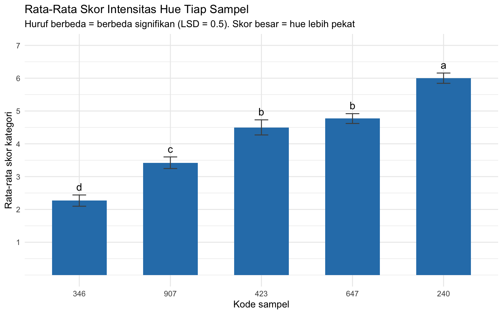
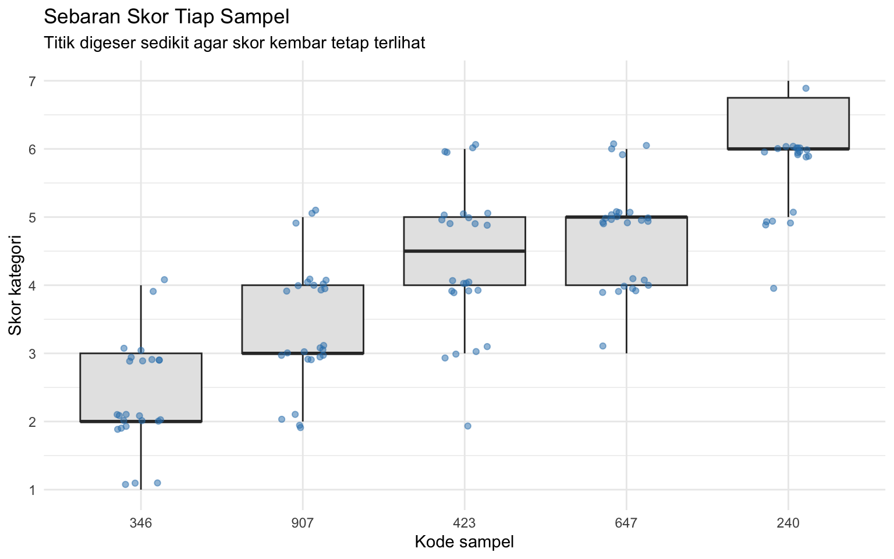

library(ggplot2)
library(dplyr)
library(tidyr)
library(readxl)5 Pengujian Intensitas Hue dengan Scoring Test
One-Way ANOVA dan uji lanjut LSD beserta notasi huruf
5.1 Tujuan Pembelajaran
Setelah sesi ini, mahasiswa akan mampu:
| Mengetahui | Memahami | Melakukan |
|---|---|---|
| Tiga unsur tristimuli warna: hue, value, dan chroma | Mengapa perubahan warna adalah milik cahaya, bukan milik benda (metameri) | Menyusun tabulasi data beserta \(T_a\), \(T_b\), dan rata-rata |
| Perbedaan scoring difference test dan ranking test | Arah skala kategori dan akibatnya pada penafsiran rata-rata | Menghitung FK, JKS, JKT, JKE, KTS, KTE, dan F-hitung |
| Rumus derajat bebas DBS, DBT, dan DBE | Mengapa uji lanjut hanya dilakukan bila ANOVA signifikan | Membandingkan F-hitung dengan F-tabel dan menarik kesimpulan |
| Prinsip uji lanjut LSD | Mengapa nilai \(t\) untuk LSD diambil dua sisi | Menghitung LSD dan menyusun notasi huruf antar sampel |
5.2 Sekilas tentang Penilaian Warna
Warna timbul dari tiga rangsangan yang bekerja serentak, disebut tristimuli:
| Unsur | Definisi |
|---|---|
| Hue | Jenis warna, yaitu panjang gelombang yang paling banyak dipancarkan. Cahaya tampak berkisar 380–770 nm |
| Value (lightness) | Gelap terangnya warna, yaitu jumlah cahaya yang dipancarkan |
| Chroma | Intensitas warna, yaitu tingkat kemurnian hue |
Dua produk bisa memiliki hue yang sama, misalnya hijau, tetapi value atau chroma berbeda. Bila dua produk diberi pewarna dengan konsentrasi berbeda, hue dan chroma-nya sama sedangkan value-nya berbeda.
Warna yang tampak bergantung pada tiga hal di luar bendanya sendiri:
| Unsur | Akibat pada penilaian |
|---|---|
| Sumber cahaya | Benda yang dipindahkan ke jenis penyinaran lain akan tampak berubah warna. Peristiwa ini disebut metamerisme. |
| Obyek | Permukaan halus dan kasar memantulkan cahaya berbeda. Pada benda tiga dimensi, tidak seluruh permukaan menerima pencahayaan yang sama. |
| Karakteristik visual panelis | Tiga tipe sel kerucut sensitif pada panjang gelombang pendek, menengah, dan panjang. Kecepatan adaptasi terhadap perubahan penyinaran berbeda antar orang. |
Karena itu ukuran objek, wadah, sumber cahaya, wajib dikendalikan. Jika booth satu lebih terang daripada yang lain, yang terukur sebagian adalah pencahayaan, bukan sampelnya.
Metode yang dipakai dalam acara ini adalah scoring test dengan skala kategori. Skala kategori yang digunakan terdiri atas tujuh kategori, dari tidak pekat sampai amat sangat pekat:
| Nilai | Kategori |
|---|---|
| 1 | Tidak pekat |
| 2 | Agak tidak pekat |
| 3 | Agak pekat |
| 4 | Sedikit pekat |
| 5 | Pekat |
| 6 | Sangat pekat |
| 7 | Amat sangat pekat |
Data yang akan kita gunakan berasal dari penilaian 26 panelis terhadap 5 sampel adonan tepung yang diberi pewarna dengan konsentrasi berbeda, dengan kode tiga digit.
Datanya disusun melebar, persis seperti Tabel 3.3 pada modul: satu baris untuk satu panelis, satu kolom untuk satu sampel.
| Kolom | Arti |
|---|---|
No |
Nomor urut panelis |
Nama |
Nama atau kode panelis |
346, 907, 647, 240, 423 |
Kode tiga digit sampel. Isinya skor kategori intensitas hue, bilangan bulat 1 sampai 7 |
Data tersimpan pada file acara6_hue.xlsx, sheet Data. Untuk data kelompok Anda sendiri, cukup ganti kode sampel pada baris judul dan isi skornya; jumlah sampel dan panelis dibaca otomatis dari file.
5.3 Memuat Data
lebar <- as.data.frame(read_excel("assets/data/acara6_hue.xlsx",
sheet = "Data"))
head(lebar)Untuk ANOVA, data melebar perlu diubah menjadi bentuk memanjang: satu baris untuk satu panelis × satu sampel.
hue <- lebar %>%
select(-No) %>%
rename(panelis = Nama) %>%
pivot_longer(cols = -panelis,
names_to = "sampel", values_to = "skor") %>%
as.data.frame()
# panelis dan sampel diatur menjadi faktor
hue$panelis <- as.factor(hue$panelis)
hue$sampel <- factor(hue$sampel, levels = setdiff(names(lebar),
c("No", "Nama")))
str(hue)'data.frame': 130 obs. of 3 variables:
$ panelis: Factor w/ 26 levels "Panelis 01","Panelis 02",..: 1 1 1 1 1 2 2 2 2 2 ...
$ sampel : Factor w/ 5 levels "346","907","647",..: 1 2 3 4 5 1 2 3 4 5 ...
$ skor : num 1 2 6 4 5 3 5 6 7 4 ...head(hue)Think-aloud: “Saya periksa dua hal sebelum menghitung. Pertama
table(hue$panelis, hue$sampel)harus berisi 1 di setiap sel, karena rumus derajat bebas pada modul mengandaikan setiap panelis menilai setiap sampel tepat satu kali. Keduarange(hue$skor)harus di dalam 1 sampai 7.”
table(hue$panelis, hue$sampel)
346 907 647 240 423
Panelis 01 1 1 1 1 1
Panelis 02 1 1 1 1 1
Panelis 03 1 1 1 1 1
Panelis 04 1 1 1 1 1
Panelis 05 1 1 1 1 1
Panelis 06 1 1 1 1 1
Panelis 07 1 1 1 1 1
Panelis 08 1 1 1 1 1
Panelis 09 1 1 1 1 1
Panelis 10 1 1 1 1 1
Panelis 11 1 1 1 1 1
Panelis 12 1 1 1 1 1
Panelis 13 1 1 1 1 1
Panelis 14 1 1 1 1 1
Panelis 15 1 1 1 1 1
Panelis 16 1 1 1 1 1
Panelis 17 1 1 1 1 1
Panelis 18 1 1 1 1 1
Panelis 19 1 1 1 1 1
Panelis 20 1 1 1 1 1
Panelis 21 1 1 1 1 1
Panelis 22 1 1 1 1 1
Panelis 23 1 1 1 1 1
Panelis 24 1 1 1 1 1
Panelis 25 1 1 1 1 1
Panelis 26 1 1 1 1 1range(hue$skor)[1] 1 75.4 Tabulasi Data
\(T_a\) adalah jumlah nilai per kolom (per sampel) dan \(T_b\) adalah jumlah nilai per baris (per panelis).
# data melebar sudah berbentuk Tabel 3.3; tinggal ditambah Tb
tabulasi <- lebar
kolom_sampel <- setdiff(names(tabulasi), c("No", "Nama"))
tabulasi$Tb <- rowSums(tabulasi[, kolom_sampel])
tabulasiTa <- hue %>%
group_by(sampel) %>%
summarise(Ta = sum(skor),
Ta_kuadrat = sum(skor)^2,
rata_rata = mean(skor),
.groups = "drop") %>%
as.data.frame()
Ta$rata_rata <- round(Ta$rata_rata, 2)
Tan <- length(unique(hue$sampel)) # jumlah sampel
p <- length(unique(hue$panelis)) # jumlah panelis
total_skor <- sum(hue$skor)
total_skor_kuadrat <- sum(hue$skor^2)
c(n = n, p = p, total = total_skor, total_kuadrat = total_skor_kuadrat) n p total total_kuadrat
5 26 545 2597 5.5 Perhitungan ANOVA
Berikut adalah perhitungan ANOVA secara manual agar nantinya dapat dibandingkan dengan fungsi aov() di R.
Derajat bebas mengikuti rumus pada modul:
\[ DBS = n - 1, \qquad DBT = (n \cdot p) - 1, \qquad DBE = n(p - 1) \]
dbs <- n - 1
dbt <- (n * p) - 1
dbe <- n * (p - 1)
c(DBS = dbs, DBT = dbt, DBE = dbe)DBS DBT DBE
4 129 125 Faktor koreksi dan jumlah kuadrat:
\[ FK = \frac{(\sum X)^2}{n \cdot p}, \qquad JKS = \frac{\sum T_a^2}{p} - FK, \qquad JKT = \sum X^2 - FK, \qquad JKE = JKT - JKS \]
FK <- total_skor^2 / (n * p)
JKS <- sum(Ta$Ta^2) / p - FK
JKT <- total_skor_kuadrat - FK
JKE <- JKT - JKS
round(c(FK = FK, JKS = JKS, JKT = JKT, JKE = JKE), 3) FK JKS JKT JKE
2284.808 207.615 312.192 104.577 Rata-rata kuadrat dan F-hitung:
\[ KTS = \frac{JKS}{DBS}, \qquad KTE = \frac{JKE}{DBE}, \qquad F_{hitung} = \frac{KTS}{KTE} \]
KTS <- JKS / dbs
KTE <- JKE / dbe
F_hitung <- KTS / KTE
alpha <- 0.05
F_tabel <- qf(1 - alpha, dbs, dbe) # setara =F.INV.RT(alpha; dbs; dbe)
round(c(KTS = KTS, KTE = KTE, F_hitung = F_hitung,
F_tabel = F_tabel), 3) KTS KTE F_hitung F_tabel
51.904 0.837 62.040 2.444 anova_tabel <- data.frame(
sumber = c("Sampel", "Error", "Total"),
db = c(dbs, dbe, dbt),
JK = round(c(JKS, JKE, JKT), 3),
KT = c(round(KTS, 3), round(KTE, 3), NA),
F_hitung = c(round(F_hitung, 3), NA, NA),
F_tabel = c(round(F_tabel, 3), NA, NA)
)
anova_tabelSebagai pemeriksaan, hasil yang sama dapat diperoleh dengan aov():
model <- aov(skor ~ sampel, data = hue)
summary(model) Df Sum Sq Mean Sq F value Pr(>F)
sampel 4 207.6 51.90 62.04 <2e-16 ***
Residuals 125 104.6 0.84
---
Signif. codes: 0 '***' 0.001 '**' 0.01 '*' 0.05 '.' 0.1 ' ' 1Hipotesis dan kesimpulannya:
- \(H_0\) = tidak ada perbedaan signifikan di antara sampel
- \(H_1\) = terdapat perbedaan signifikan di antara sampel
- \(F_{hitung} > F_{tabel}\) \(\rightarrow\) \(H_0\) ditolak, \(H_1\) diterima
ifelse(F_hitung > F_tabel,
"F-hitung > F-tabel: H0 ditolak, ada perbedaan antar sampel",
"F-hitung < F-tabel: H0 diterima, tidak ada perbedaan antar sampel")[1] "F-hitung > F-tabel: H0 ditolak, ada perbedaan antar sampel"5.5.1 Hinge Question
Sebelum melanjutkan, jawablah: ANOVA menunjukkan F-hitung jauh lebih besar daripada F-tabel. Sampel 647 memperoleh rata-rata skor 4,77 sedangkan sampel 423 memperoleh 4,50. Manakah pernyataan yang benar?
- Sampel 647 lebih pekat daripada 423, karena rata-ratanya lebih tinggi dan ANOVA signifikan
- Belum dapat disimpulkan; ANOVA hanya menyatakan ada sampel yang berbeda, bukan pasangan mana yang berbeda
- Semua sampel pasti berbeda satu sama lain, karena F-hitung sangat besar
- Sampel 423 diberi pewarna lebih sedikit daripada 647
Jawaban: B. ANOVA yang signifikan hanya berarti paling tidak satu sampel berbeda dari yang lain. F-hitung yang sangat besar pun bisa sepenuhnya disebabkan oleh sampel-sampel yang jauh terpisah, misalnya 346 dan 240, sementara pasangan yang berdekatan tidak berbeda sama sekali. Untuk mengetahui pasangan mana yang berbeda, perlu dilakukan uji lanjut LSD.
5.6 Uji Lanjut LSD
Uji lanjut hanya dilakukan bila ANOVA signifikan. LSD dipilih karena nilai pembandingnya tunggal dan dapat dihitung tangan dengan tabel \(t\) biasa (seperti halnya uji T-test biasa), sehingga seluruh langkahnya terlihat jelas. Konsekuensinya, LSD mengendalikan peluang salah per pasangan, bukan untuk kesepuluh pasangan sekaligus, sehingga cenderung lebih mudah menyatakan dua sampel berbeda dibandingkan uji Tukey HSD. Kalau \(H_0\) diterima, perhitungan dicukupkan sampai di sini.
\[ LSD = t_{(\alpha/2,\; DBE)} \times \sqrt{\frac{2 \cdot KTE}{p}} \]
t_tabel <- qt(1 - alpha / 2, dbe) # nilai t dua sisi
LSD <- t_tabel * sqrt(2 * KTE / p)
round(c(t_tabel = t_tabel, LSD = LSD), 3)t_tabel LSD
1.979 0.502 Perhatikan nilai \(t\) yang dipakai. Modul menuliskan rumus Excel
=T.INV(alpha; dbe). FungsiT.INVmengembalikan nilai \(t\) satu sisi bagian kiri, sehingga untuk \(\alpha = 0{,}05\) hasilnya negatif, yaitu sekitar \(-1{,}66\). Nilai yang dimaksud hampir pasti nilai \(t\) dua sisi, yang di Excel ditulis=T.INV.2T(alpha; dbe)atau=T.INV(1-alpha/2; dbe), dan di R adalahqt(1 - alpha/2, dbe). Pada data ini \(t\) satu sisi menghasilkan LSD sekitar 0,42 sedangkan \(t\) dua sisi sekitar 0,50. Kebetulan tidak ada pasangan sampel yang selisihnya jatuh di antara kedua nilai itu, sehingga kesimpulannya sama; tetapi pada data kelompok lain hal itu bisa berbeda.
# selisih rata-rata antar seluruh pasangan sampel
rata <- Ta$rata_rata
names(rata) <- as.character(Ta$sampel)
pasangan <- t(combn(names(rata), 2))
banding <- data.frame(
sampel_1 = pasangan[, 1],
sampel_2 = pasangan[, 2],
selisih = round(abs(rata[pasangan[, 1]] - rata[pasangan[, 2]]), 2)
)
banding$LSD <- round(LSD, 2)
banding$kode <- ifelse(banding$selisih > LSD, 1, 0)
banding$kesimpulan <- ifelse(banding$kode == 1,
"Berbeda signifikan",
"Tidak berbeda signifikan")
bandingKolom kode mengikuti aturan notasi pada modul: selisih \(<\) LSD diberi angka 0, selisih \(>\) LSD diberi angka 1.
5.7 Notasi Huruf
Sampel dengan notasi huruf yang sama berarti tidak berbeda signifikan; huruf yang berbeda berarti berbeda signifikan.
# install.packages("agricolae")
library(agricolae)
lsd_hasil <- LSD.test(model, "sampel", alpha = alpha,
console = FALSE, group = TRUE)
notasi <- lsd_hasil$groups
notasi$sampel <- rownames(notasi)
notasi <- notasi[, c("sampel", "skor", "groups")]
names(notasi) <- c("sampel", "rata_rata", "notasi")
notasi$rata_rata <- round(notasi$rata_rata, 2)
notasi# urutkan dari rata-rata terbesar, yaitu intensitas hue tertinggi
notasi[order(notasi$rata_rata, decreasing = TRUE), ]Cara membaca tabel ini:
| Yang Anda lihat | Artinya |
|---|---|
| Dua sampel bernotasi sama | Selisih rata-ratanya lebih kecil daripada LSD; belum ada bukti keduanya berbeda |
| Dua sampel bernotasi berbeda | Selisih rata-ratanya melebihi LSD; keduanya berbeda signifikan |
Satu sampel bernotasi ganda, misalnya ab |
Sampel itu tidak berbeda dari kelompok a maupun kelompok b; posisinya di antara keduanya |
| Rata-rata paling besar | Intensitas hue paling tinggi, karena skalanya menaik |
5.8 Grafik
ringkas <- hue %>%
group_by(sampel) %>%
summarise(rata_rata = mean(skor),
se = sd(skor) / sqrt(n()),
.groups = "drop") %>%
left_join(notasi[, c("sampel", "notasi")], by = "sampel") %>%
as.data.frame()
ggplot(ringkas, aes(x = reorder(sampel, rata_rata), y = rata_rata)) +
geom_col(fill = "#2C7FB8", width = 0.6) +
geom_errorbar(aes(ymin = rata_rata - se, ymax = rata_rata + se),
width = 0.15, colour = "grey30") +
geom_text(aes(label = notasi, y = rata_rata + se + 0.25),
size = 4.2) +
scale_y_continuous(limits = c(0, 7), breaks = 1:7) +
labs(title = "Rata-Rata Skor Intensitas Hue Tiap Sampel",
subtitle = paste0("Huruf berbeda = berbeda signifikan (LSD = ",
round(LSD, 2),
"). Skor besar = hue lebih pekat"),
x = "Kode sampel", y = "Rata-rata skor kategori") +
theme_minimal()
ggplot(hue, aes(x = reorder(sampel, skor, FUN = mean), y = skor)) +
geom_boxplot(fill = "grey90", outlier.shape = NA) +
geom_jitter(width = 0.15, height = 0.12, alpha = 0.5,
colour = "#2C7FB8") +
scale_y_continuous(limits = c(1, 7), breaks = 1:7) +
labs(title = "Sebaran Skor Tiap Sampel",
subtitle = "Titik digeser sedikit agar skor kembar tetap terlihat",
x = "Kode sampel", y = "Skor kategori") +
theme_minimal()
Mengapa nilainya terlihat tersebar padahal menggunakan skala kategori? Boxplot dengan feature jitter
geom_jitter()dapat memvisualisasikan berapa banyak panelis yang sebenarnya ada di setiap nilai, maka terlihat seperti tidak pada skor yang sama.
5.9 Menyusun Kesimpulan
Kesimpulan #1 (ANOVA). Berdasarkan hasil analisis One-Way ANOVA dengan tingkat konfidensi 95%, F-hitung sampel (…) \(>\) atau \(<\) F-tabel (…); \(H_0\) ditolak atau diterima, maka \(H_1\) diterima atau ditolak, sehingga ada / tidak ada perbedaan di antara sampel.
Kesimpulan #2 (LSD). Untuk setiap pasangan sampel: berdasarkan analisis Post-Hoc LSD, sampel (kode)-(kode), selisih rata-rata (…) \(>\) atau \(<\) LSD (…), dengan tingkat konfidensi 95%, maka \(H_0\) ditolak atau diterima, sehingga ada atau tidak ada perbedaan signifikan antara sampel.
# bahan kalimat Kesimpulan #2, satu baris per pasangan
banding[, c("sampel_1", "sampel_2", "selisih", "LSD", "kesimpulan")]Latihan menulis: Selain kedua kesimpulan di atas, tambahkan satu paragraf yang mengaitkan hasil dengan konsentrasi pewarna pada cheat sheet. Apakah urutan intensitas hue menurut panelis sesuai dengan urutan konsentrasi pewarna yang sebenarnya? Bila ada sampel yang menyimpang, sebutkan kemungkinan penyebabnya dari tiga unsur penentu warna yang dibahas di awal.
5.10 Latihan (You Do)
5.10.1 Latihan 1: Membaca Tabel ANOVA
- Tampilkan ulang tabel ANOVA dan tunjukkan bahwa \(JKS + JKE = JKT\):
c(JKS + JKE, JKT)- Berapa persen keragaman total yang dijelaskan oleh perbedaan antar sampel?
round(100 * JKS / JKT, 1)Apa arti sisanya, dan dari mana keragaman itu berasal?
5.10.2 Latihan 2: Pasangan yang Tidak Berbeda
subset(banding, kode == 0)Untuk pasangan yang tidak berbeda signifikan, berapa selisih konsentrasi pewarna keduanya menurut cheat sheet? Apakah selisih itu memang terlalu kecil untuk dibedakan mata?
5.10.3 Latihan 3: Challenges
- Modul menggunakan One-Way ANOVA, sehingga perbedaan kebiasaan menilai antar panelis masuk ke dalam error. Coba masukkan panelis sebagai blok, lalu bandingkan KTE-nya:
model2 <- aov(skor ~ sampel + panelis, data = hue)
summary(model2)KTE mana yang lebih kecil? Apa akibatnya pada nilai LSD dan pada jumlah pasangan yang dinyatakan berbeda? Mengapa hasil ini masuk akal bila dikaitkan dengan materi baseline pada Acara 3?
- Bandingkan LSD dengan uji Tukey, yang mengendalikan peluang salah pada seluruh himpunan pasangan sekaligus:
TukeyHSD(model, "sampel")Manakah yang lebih longgar menyatakan perbedaan? Dengan 10 pasangan yang diuji sekaligus, mana yang lebih pantas dilaporkan?
- Karena skor kategori bersifat ordinal, ulangi pengujian dengan uji nonparametrik dan bandingkan kesimpulannya:
kruskal.test(skor ~ sampel, data = hue)Apakah kesimpulannya berubah? Kalau tidak, apa artinya bagi keputusan memakai ANOVA pada data skala kategori?
5.11 Ringkasan
Dalam sesi ini kita telah mempelajari:
- Tristimuli warna hue, value, dan chroma, serta perbedaan ketiganya
- Tiga unsur penentu warna yang tampak: sumber cahaya, obyek, dan karakteristik visual panelis, termasuk gejala metameri
- Perbedaan scoring difference test dan ranking test, dan mengapa skor kembar diperbolehkan pada scoring
- Arah skala kategori, di mana skor besar berarti intensitas hue tinggi, serta akibatnya pada penafsiran bila dibandingkan dengan skala yang arahnya terbalik
- Perhitungan One-Way ANOVA secara manual: derajat bebas, FK, JKS, JKT, JKE, KTS, KTE, dan F-hitung, beserta pemeriksaannya dengan aov()
- Uji lanjut LSD, termasuk penggunaan nilai \(t\) dua sisi
- Penyusunan notasi huruf dan cara membacanya, termasuk arti notasi ganda seperti ab